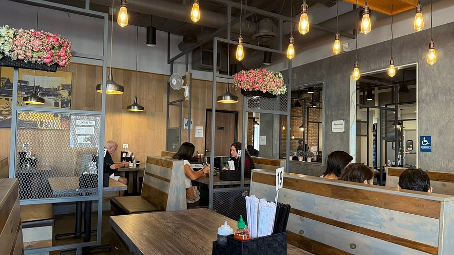
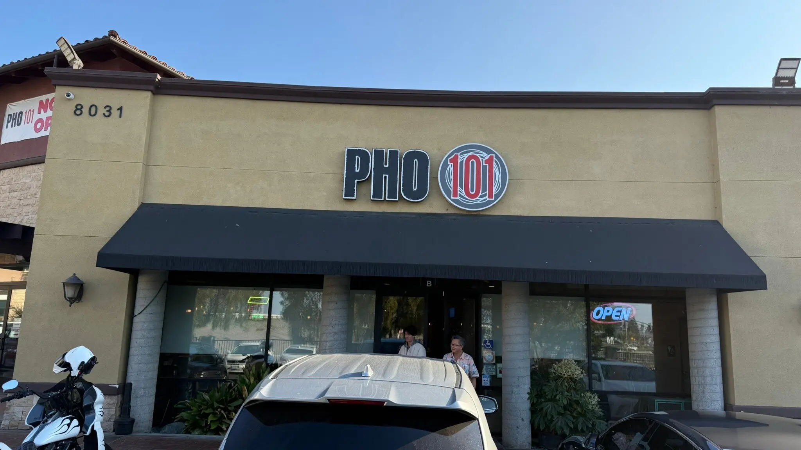

About Pho 101
← Back to HomeOur Family Legacy
For over 35 years, the Tran family has been proudly serving the Orange County community with authentic Vietnamese cuisine. Our restaurant is more than just a place to eat—it's a reflection of our heritage, our passion, and our commitment to quality.
When the Tran family immigrated to the United States in 1975, they brought with them generations of culinary traditions and cherished family recipes. What started as a small neighborhood restaurant has grown into a beloved institution, serving thousands of families who appreciate genuine Vietnamese flavors and warm hospitality.
Our signature pho broth is crafted fresh every day using traditional methods and premium ingredients. The recipe has been passed down through three generations of the Tran family—from grandmother to parents to the next generation. We source fresh, high-quality produce and meat locally whenever possible, supporting our community while ensuring the best flavors on your plate.
At Pho 101, we believe that food brings families together. Whether you're joining us for a quick lunch or a special family gathering, we welcome you to our table. Come experience the warmth, authenticity, and delicious flavors that have made us a cornerstone of Garden Grove's culinary scene.

